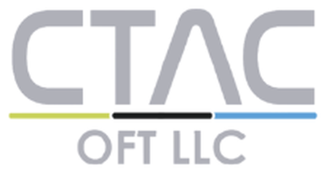
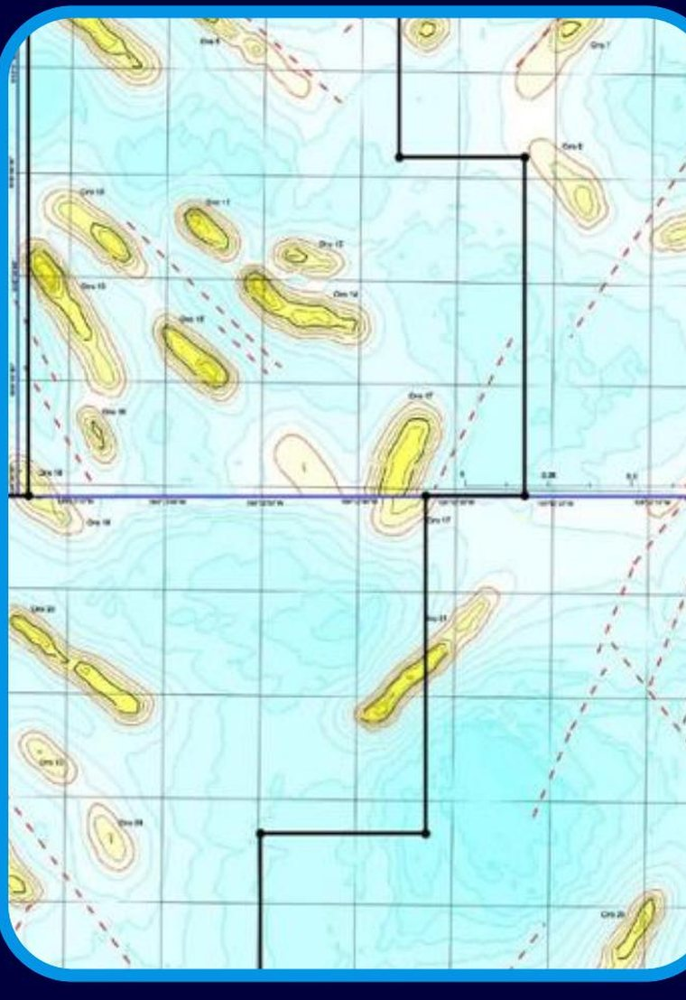
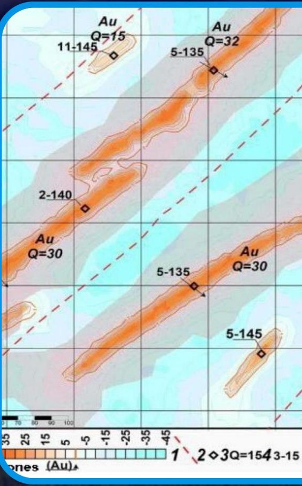
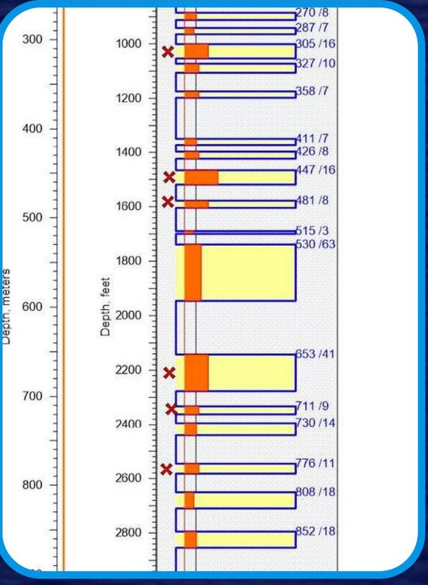
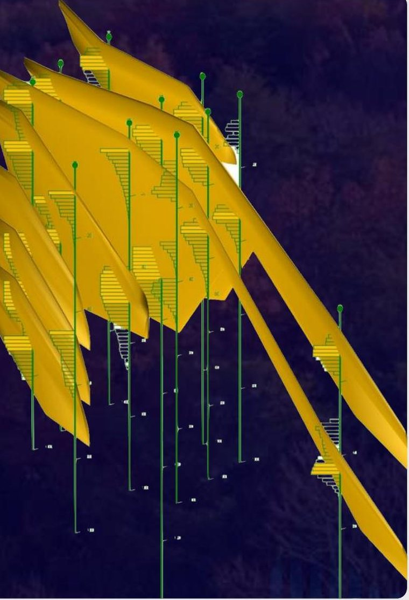

Greenfields o áreas exploratorias
Punto de partida para la exploración de áreas no estudiadas previamente. La espectrografía permite visualizar los prospectos presentes en el área y descartar zonas donde no se evidencia el material buscado.
Exploración de recursos naturales
Quantik Geo integra tecnología satelital e instrumentación geofísica de campo para localizar el recurso, priorizar objetivos y dirigir la perforación con menos incertidumbre.

Hasta94%
de precisión
Éxito50%–70%
en el descubrimiento de recursos económicamente viables
Hasta80%
menos tiempo
Hasta80%
menos costo
Enfoque
La exploración de recursos naturales requiere decidir dónde concentrar tiempo, capital y trabajo de campo. Quantik Geo ayuda a integrar información remota, geológica y geofísica para identificar áreas de interés y dirigir mejor las siguientes etapas de validación.
Impacto
Comparación entre el ciclo de exploración convencional y un proyecto que incorpora MFT™.
Sobre estas cifras. Los valores de la columna del método tradicional son rangos de referencia de la industria señalados por CTAC, no mediciones de Quantik Geo. Los resultados de cada proyecto dependen de su alcance y características.
Tecnología
MFT™ —Mineral Finder Technology— es una tecnología electromagnética multiespectral desarrollada por CTAC, orientada a la ubicación precisa de recursos minerales específicos. Identifica anomalías electromagnéticas asociadas con depósitos minerales combinando información satelital multiespectral con instrumentación geofísica de campo, para delimitar áreas de interés y dirigir los objetivos de perforación.
PrincipioPrincipio electromagnético
DetecciónFirma espectral
IntegraciónSíntesis e integración de la información
Más de 30 años de investigación y trabajos sobre electromagnetismo como base de la tecnología.
Los resultados dependen de la escala, características del área, información disponible y alcance de las fases contratadas.
Las anomalías se identifican a partir de frecuencias de resonancia en el rango del azul profundo y el ultravioleta del espectro electromagnético.
Metodología
Una fase satelital de laboratorio, dos fases de instrumentación en campo y una fase de integración y modelado, con acompañamiento posterior según el alcance contratado.

Fase 1
Localización satelital
MétodoEspectrografía satelital (ES).

Fase 2.1
Vista superior
MétodoInstrumentación patentada de topografía de campo.

Fase 2.2
Vista lateral
MétodoPerfilaje desde superficie con equipos patentados.

Fase 3
Integración y modelo 3D
MétodoSoftware de geointeligencia algorítmica multiespectral.
Fase 4
Laboratorio y campoAcompañamiento y soporte técnico desde la perforación hasta la producción, de acuerdo con el alcance contratado.
Alcance de referencia. Un alcance completo de referencia para las fases 1 a 3 se presenta en aproximadamente 17 semanas. Los tiempos son de referencia y pueden variar según la superficie, el recurso, la escala, la topografía y el alcance contratado.
Métodos geofísicos. Los métodos que componen la tecnología son: ES —espectrografía satelital, correspondiente a la fase remota—, ECECI —Establecimiento de Campos Electromagnéticos de Corto Impulso, que delimita en superficie la extensión de la anomalía— y SVER —Sondaje Vertical por Electro Resonancia, que identifica los intervalos polarizados en profundidad, su cantidad y sus espesores aproximados.
Aplicaciones
Categorías de aplicación para proyectos de exploración, producción y perforación.
Punto de partida para la exploración de áreas no estudiadas previamente. La espectrografía permite visualizar los prospectos presentes en el área y descartar zonas donde no se evidencia el material buscado.
En áreas donde ya existen estudios tradicionales y el análisis de la información resulta complicado, MFT™ puede apoyar la interpretación sobre la presencia del material buscado.
Apoya procesos de reingeniería orientados a ubicar zonas de acumulación mineral aún no localizadas y a verificar la existencia de mineral en estructuras conocidas, con miras a optimizar la recuperación del depósito.
Un estudio de verificación puede aportar información sobre las capas o intervalos polarizados presentes, sus profundidades, espesores aproximados y coordenadas hacia donde orientar los siguientes trabajos.
Otros ámbitos de aplicación
MFT™ no sustituye la perforación ni la validación geológica y geofísica en campo. Su función es generar y priorizar objetivos para orientar las siguientes etapas de exploración.
Beneficios
Aplicables según el alcance y las características de cada proyecto.
01
02
03
Consideraciones técnicas y operativas
El uso de la tecnología MFT™ tiene impacto ambiental nulo: no requiere explosiones, no genera ruido y no provoca afectaciones a la flora, la fauna ni a la propiedad privada.
La fase remota permite analizar áreas de interés sin intervención física directa en el terreno.
Para el uso de la tecnología MFT™ no se requieren permisos o licencias.
Esta característica permite realizar una evaluación inicial de grandes extensiones antes de ejecutar campañas de exploración directa. Las actividades posteriores, como acceso al terreno, trabajos de exploración directa o perforación, estarán sujetas a los requisitos aplicables de cada proyecto y jurisdicción.
Precisión de hasta 94% y éxito entre 50% y 70% en el descubrimiento de recursos económicamente viables.
Los resultados específicos dependen del área de estudio, su extensión, las condiciones del proyecto, la información disponible y las fases técnicas contratadas.
Tiempos de referencia para cada fase:
Los tiempos son referencias publicadas por CTAC y pueden variar según la superficie, el recurso, la escala, la topografía y el alcance contratado. Los tiempos definitivos se establecen en la propuesta técnica de cada proyecto.
CTAC publica que la fase satelital puede generar mapas 2D de minerales bajo cubierta a profundidades de hasta 9,8 kilómetros.
El alcance efectivo depende del recurso, el área, la escala y las condiciones técnicas del proyecto.
Cómo trabajamos
Cada proyecto se estructura de acuerdo con su ubicación, superficie, recurso objetivo, información disponible y necesidades de validación.
Revisión del área, el recurso objetivo y la etapa actual de exploración.
Formalización de la confidencialidad antes de recibir información sensible del proyecto.
Coordenadas del área e información geológica y geofísica con la que ya cuenta el cliente.
Análisis técnico conjunto para determinar la escala y las fases aplicables al proyecto.
Alcance, entregables, tiempos estimados y condiciones comerciales.
Espectrografía satelital sobre el área definida.
ECECI y SVER, según la tarea técnica y la información disponible del área.
Análisis de la información adquirida y elaboración del informe.
Entrega y explicación de los resultados, con recomendaciones para las siguientes etapas.
Sobre los tiempos. Se determinan en cada proyecto de acuerdo con la superficie, el recurso, la escala, la topografía, la información disponible y el alcance técnico contratado, y quedan establecidos en la propuesta técnica. Los tiempos de referencia por fase están en Tiempos de ejecución.
Resultados
Entregables orientados a decidir dónde y cómo continuar el trabajo de campo.
Quantik Geo + CTAC
Las tecnologías MFT™, WFT™ y OFT™ fueron desarrolladas por CTAC, empresa que conserva su propiedad intelectual. Quantik Geo coordina su comercialización, integración y desarrollo con los clientes.
Quantik Geo trabaja en coordinación con CTAC para estructurar y desarrollar proyectos de prospección de minerales, agua, petróleo y gas, acompañando al cliente desde la evaluación inicial hasta la entrega de resultados y recomendaciones.
MFT™ · WFT™ · OFT™
ClienteProyecto de exploración
MFT™, WFT™ y OFT™ son tecnologías propiedad de CTAC.
Otras soluciones
CTAC desarrolla además dos tecnologías de prospección remota para otros recursos, que Quantik Geo también comercializa e integra.
Tecnología de prospección de depósitos de agua.
Tecnología para la prospección de yacimientos de petróleo y gas, tanto terrestres como costa afuera.
Tecnología satelital y geofísica de campo para la identificación de anomalías asociadas con depósitos minerales.
Preguntas frecuentes
Dudas habituales sobre la tecnología, los tiempos y el alcance de los proyectos.
Es la representación gráfica de las anomalías electromagnéticas, que evidencia la presencia o ausencia del material buscado en el área analizada.
Información multiespectral proveniente de satélites dedicados a estudios geofísicos, tipo Georesurs-P y DK.
La adquisición se realiza desde plataformas pasivas que adquieren información multiespectral.
Metadatos multiespectrales asociados a las coordenadas del área de interés, a partir de los cuales se elaboran los mapas espectrográficos de anomalías.
La data satelital se transfiere a una plancha satelital en la que la información digital se convierte a análoga, para su análisis espectrométrico en laboratorio de geofísica.
CTAC publica una precisión de hasta 94% y un éxito entre 50% y 70% en el descubrimiento de recursos económicamente viables. Los resultados dependen del alcance y las características de cada proyecto.
CTAC publica que la fase satelital puede generar mapas 2D de minerales bajo cubierta a profundidades de hasta 9,8 kilómetros.
El alcance efectivo depende del recurso, el área, la escala y las condiciones técnicas del proyecto.
Corresponde a la Fase 3: los resultados de las fases anteriores se integran mediante software de geointeligencia y análisis geofísico para generar un modelo 3D. Se entrega cuando el alcance contratado incluye esa fase.
MFT™ no sustituye la validación geológica, geofísica ni la perforación. Su función es generar y priorizar objetivos para orientar las siguientes etapas de exploración.
MFT™ no constituye por sí sola una certificación de recursos o reservas minerales. Cualquier declaración de recursos o reservas requiere los estudios, validaciones y profesionales competentes aplicables.
Las fases 2.1 y 2.2 se ejecutan con instrumentación en campo y son las que aportan la vista superior refinada y la información de profundidad. Su ejecución depende del alcance contratado y de la tarea técnica definida para el proyecto.
Tiempos de referencia por fase:
Un alcance completo de referencia para las fases 1 a 3 se presenta en aproximadamente 17 semanas. Pueden variar según la superficie, el recurso, la escala, la topografía y el alcance contratado.
ECECI delimita en superficie la extensión de la anomalía electromagnética identificada durante la espectrografía.
SVER determina las profundidades, la cantidad de intervalos polarizados y sus espesores.
MFT™ es una tecnología pasiva y no requiere licencias ambientales para su uso.
Las actividades posteriores, como acceso al terreno, trabajos de exploración directa o perforación, estarán sujetas a los requisitos aplicables de cada proyecto y jurisdicción.
Quantik Geo puede formalizar acuerdos de confidencialidad antes de recibir información sensible del proyecto. El alcance y las condiciones se definen en cada caso.
Las referencias técnicas de esta sección provienen de la información publicada por CTAC sobre las tecnologías MFT™, WFT™ y OFT™.
Contacto
Comparta la ubicación general, el recurso objetivo y la etapa actual de exploración. Nuestro equipo realizará una evaluación inicial para definir los siguientes pasos.